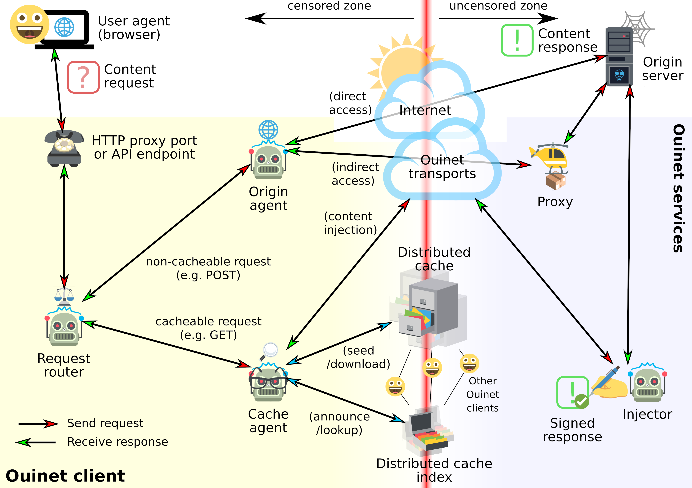

Overview
See lightning talk at the Decentralized Web Summit 2018.
Ouinet is a Free/Open Source technology which allows web content to be served with the help of an entire network of cooperating nodes using peer-to-peer routing and distributed caching of responses. This helps mitigate the Web's characteristic single point of failure due to a client application not being able to connect to a particular server.
The typical Ouinet client node setup consists of a web browser or other application using a special HTTP proxy or API provided by a dedicated program or library on the local machine. When the client gets a request for content, it attempts to retrieve the resource using several mechanisms. It tries to fetch the page from a distributed cache by looking up the content in a distributed cache index (like the BitTorrent DHT), and if not available, it contacts a trusted injector server over a peer-to-peer routing system (like I2P) and asks it to fetch the page and store it in the distributed cache.

Future access by client nodes to popular content inserted in distributed storage shall benefit from increased redundancy and locality, which translates to: increased availability in the face of connectivity problems; increased transfer speeds in case of poor upstream links; and reduced bandwidth costs when internet access providers charge more for external or international traffic. Content injection is also designed to allow for content re-introduction and seeding in extreme cases of total connectivity loss (e.g. natural disasters).
The Ouinet library is a core technology that can be used by any application to benefit from these advantages. Ouinet integration provides any content creator the opportunity to use cooperative networking and storage for the delivery of their content to users around the world.
Warning: Ouinet is still highly experimental. Some features (like peer-to-peer routing) may or may not not work smoothly depending on the different back-end technologies, and random unexpected crashes may occur. Also, Ouinet is not an anonymity tool: information about your browsing might be leaked to other participants in the network, as well as the fact that your application is seeding particular content. Running some components (like injector code) may turn your computer into an open web proxy, and other security or privacy-affecting issues might exist. Please keep this in mind when using this software and only assume reasonable risks.